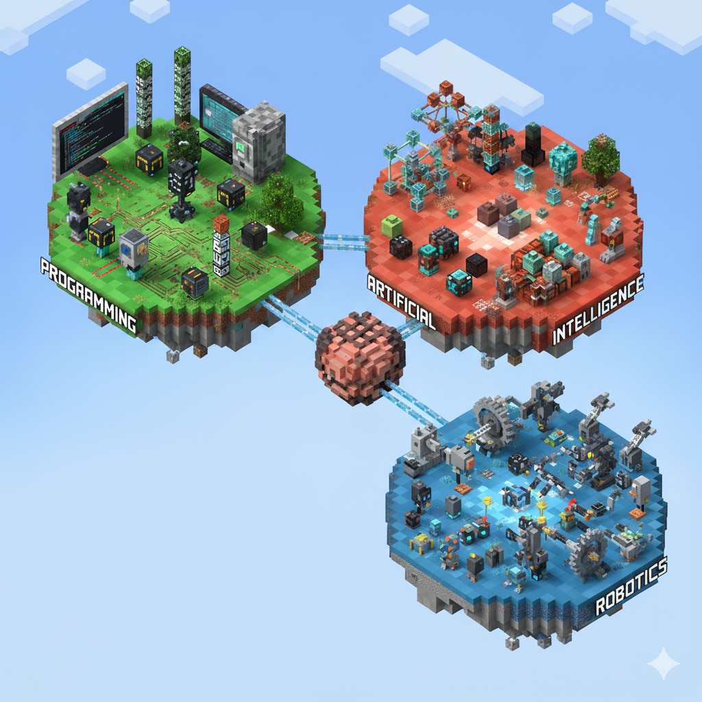

🎯
Objetivo Principal
Desmitificar la tecnología y conectar con los intereses del alumnado para potenciar su motivación desde el primer día.
⏱️
Duración Total
45-50 minutos
👨🏫
Nivel
2º de E.S.O.
🔑
Competencias Clave
Digital, Aprender a aprender, Comunicación lingüística, Sentido de la iniciativa.
Guion Detallado de la Sesión
El Viaje: Presentación y Exploración
Objetivo: Presentar formalmente la asignatura, captar la atención y conectar con los conocimientos previos del alumnado.
- (0-5 min) Presentación de la Asignatura:
"Hola a todos y bienvenidos a 'Programación, Inteligencia Artificial y Robótica'. Soy [Tu Nombre]. Puede que el nombre de la asignatura suene muy largo, pero lo que vamos a hacer aquí es muy sencillo y emocionante: vamos a aprender cómo funciona la tecnología que ya usáis todos los días. Esta asignatura no es solo para 'ser informático', es para entender el mundo en el que vivimos. La IA, los robots y los programas están cambiando todo, desde cómo jugamos hasta cómo aprendemos. Aquí, vais a ser vosotros los creadores. Vais a usar el 'pensamiento computacional', que es como aprender a resolver problemas paso a paso, para diseñar vuestras propias soluciones, trabajar en equipo y pensar de forma crítica sobre si la tecnología se usa para bien. En resumen: vais a pasar de ser solo usuarios a ser creadores."
- (5-8 min) Bienvenida y Conexión:
Rompe el hielo para crear un ambiente cercano y establecer un punto de partida común. Lanza la pregunta: "Ahora que ya sabéis de qué va esto, vamos a entrar en materia. Antes de seguir, ¿quién ha jugado a algún videojuego este verano? ¿O ha usado un filtro de TikTok o Instagram?" (Espera a que levanten la mano, genera complicidad).
Finalidad de esta pregunta: Es una pregunta-puente. Su objetivo no es saber a qué juegan, sino demostrarles que ya son usuarios expertos de la tecnología que vamos a estudiar. Valida sus experiencias y las convierte en el punto de partida de la clase, creando un ambiente de confianza.
Qué esperar de los alumnos: Prácticamente toda la clase levantará la mano. Algunos puede que comenten espontáneamente el nombre de un juego o una red social. Es una respuesta de bajo riesgo que fomenta la participación masiva.
Tu comentario/transición: "¡Perfecto, casi todos! Eso demuestra que ya sabéis mucho del tema, aunque sea como usuarios. Lo que haremos aquí es pasar al siguiente nivel: vamos a abrir el capó de esas apps y videojuegos para ver cómo funcionan por dentro. Empecemos nuestro viaje por los 3 mundos que componen esta tecnología..."
- (8-18 min) Exploración de los 3 Mundos:
Usa la metáfora de la aventura para explicar los bloques de contenido de forma interactiva.
Mundo 1: Programación 🎮 - El Poder de dar Órdenes
Así lo harías en clase:
"Vamos a entrar en nuestro primer mundo: el de la Programación. Quiero que penséis en esto de dos maneras. Primero, es como construir con LEGO. Tienes un montón de piezas pequeñas y sencillas, y combinándolas en el orden correcto, puedes construir cualquier cosa: un castillo, una nave espacial... Programar es igual: usamos órdenes muy simples, como 'avanza', 'gira' o 'cambia de color', y al unirlas, creamos algo increíble como una animación o un videojuego."
"La otra forma de verlo es que vosotros sois los directores de una película. El actor, que es el ordenador, no tiene ni idea de qué hacer. Vosotros tenéis que escribir un guion perfecto, línea por línea, diciéndole exactamente qué decir, dónde moverse y cuándo hacerlo. Si una línea del guion está mal, el actor se quedará parado o hará algo que no toca. ¡Aquí vosotros tenéis el control creativo!"
La pregunta clave:
"Ahora, un reto para vosotros. Si pudierais darle UNA sola orden a vuestro móvil y la obedeciera siempre a la perfección, ¿cuál sería?"
Gestionando las respuestas y creando la conexión (Ejemplo completo):
Escenario: Un alumno responde: "¡Que ordene mi cuarto!"
Tu reacción (con entusiasmo): "¡Buenísima idea! Es un objetivo perfecto. Pero vamos a pensar como programadores. Nuestro móvil es muy listo para unas cosas, pero muy tonto para otras. No entiende una idea general como 'ordena el cuarto'. Tenemos que darle instrucciones, como si fuera un robot."
La interacción (mientras escribes en la pizarra):
"Vale, equipo, ayudadme. ¿Cuál sería la primerísima orden que le daríais al robot para ordenar el cuarto?" (Un alumno podría decir: "Recoger la ropa del suelo").
PIZARRA:
1. Recoger la ropa del suelo.
"Perfecto. Ya tiene la ropa en las manos. ¿Y ahora qué? ¿Orden número dos?" (Otro alumno: "Meterla en el armario").
"¡Ojo! ¿Y si la ropa está sucia? No queremos guardar calcetines sucios en el armario, ¿verdad? El robot no sabe la diferencia. ¡Tenemos que enseñarle a decidir!"
PIZARRA (corrigiendo):
1. Coger una prenda de ropa del suelo.
2. PREGUNTAR: ¿La ropa está limpia?
- Si SÍ -> Doblar y guardar en el armario.
- Si NO -> Meter en el cesto de la ropa sucia."¡Esto ya parece más un programa! Le hemos enseñado a tomar una decisión. Pero, ¿hemos terminado? ¿Qué pasa si hay 10 prendas en el suelo?" (Los alumnos se darán cuenta de que hay que repetirlo).
"¡Exacto! Necesitamos que repita el proceso."
PIZARRA (versión final):
MIENTRAS haya ropa en el suelo:
1. Coger una prenda.
2. PREGUNTAR: ¿Está limpia?
- Si SÍ -> Doblar y guardar.
- Si NO -> Meter en el cesto.La conclusión (dirigiéndote a toda la clase):
"¿Veis lo que acabamos de hacer? Hemos cogido una idea grande y abstracta ('ordena el cuarto') y la hemos convertido en una serie de pasos súper precisos, ordenados y con decisiones, que hasta el robot más simple podría seguir. Pues a esta receta, a esta lista de instrucciones detalladas, se le llama **algoritmo**. Y eso es, exactamente, lo primero y más importante que vamos a aprender a crear."
Mundo 2: Inteligencia Artificial 🧠 - El Secreto de Aprender
Así lo harías en clase:
"Nuestro segundo mundo es el de la Inteligencia Artificial o IA. Suena a ciencia ficción, pero la usáis todos los días. La IA no es que una máquina piense como un humano, es más bien que una máquina es capaz de 'aprender' a encontrar patrones. Por ejemplo, cuando Spotify te recomienda una canción nueva, no es porque un señor en una oficina diga 'a esta persona le va a gustar esto'. Es porque un programa ha analizado miles de personas a las que les gustan las mismas canciones que a ti, y te recomienda lo que ellos también escuchan. Busca parecidos, patrones."
La pregunta clave:
"Pensemos en otro ejemplo. ¿Cómo cree TikTok o Instagram que sabe qué vídeo os va a gustar después para que no paréis de mirar la pantalla?"
Gestionando las respuestas y creando la conexión:
Los alumnos dirán cosas como: "por los likes", "por el tiempo que miras un vídeo", "por los vídeos que compartes", "por las cuentas que sigues". Valida todas esas respuestas: "¡Exacto! ¡Habéis dado en el clavo! No es magia ni os espían por el micro. La IA es como un detective que recoge pistas. Cada 'like', cada segundo que pasas en un vídeo, cada vez que lo compartes, es una pista que le das sobre tus gustos. El programa analiza todas esas pistas, las compara con las de millones de personas y 'aprende' a predecir qué te mantendrá enganchado. En esta parte de la asignatura, vamos a descubrir cómo funcionan esos sistemas de recomendación y cómo 'entrenar' a una IA sencilla para que aprenda a reconocer cosas."
Mundo 3: Robótica 🤖 - El Salto al Mundo Real
Así lo harías en clase:
"Y llegamos al tercer mundo, ¡la Robótica! Aquí es donde todo lo que programamos en la pantalla da el salto al mundo real. Un robot no es más que un ordenador con cuerpo: con ruedas, brazos, sensores... que le permiten moverse e interactuar con lo que le rodea. Para que veáis de qué hablo, mirad este vídeo."
La pregunta clave:
"El vídeo es genial, pero ahora pensemos en algo práctico. Si tuvierais un robot en casa, ¿qué tarea odiosa, esa que no soportáis hacer, le encargaríais?"
Gestionando las respuestas y creando la conexión:
Saldrán respuestas como "limpiar el baño", "hacer la cama", "sacar la basura". Elige una, por ejemplo "sacar la basura", y profundiza: "¡Buena elección! Para que un robot saque la basura, no solo necesita un programa (el cerebro), necesita un cuerpo. ¿Qué partes necesitaría? (Los alumnos dirán: ruedas, un brazo, una pinza...). ¡Exacto! Y necesitaría 'sentidos', ¿no? ¿Cómo sabe si la bolsa está llena? Quizás con un sensor de peso. ¿Cómo sabe el camino a la puerta sin chocar? Con un sensor de distancia. ¿Y cómo sabe volver? ¡Quizás siguiendo una línea en el suelo! En esta parte de la aventura, vamos a ser ingenieros: montaremos los **sensores** (los ojos y oídos del robot) y los **actuadores** (los brazos y ruedas), y programaremos su cerebro para que complete misiones en el mundo real."
- (18-20 min) Transición a la Fase 2: Prepara la actividad de la ficha. Ej: "Ahora que conocéis el mapa de nuestra aventura, quiero saber qué tipo de exploradores sois..."
Los Aventureros: Ficha y Presentación
Objetivo: Conocer a cada alumno, sus motivaciones e ideas. Fomentar un clima de confianza y escucha activa.
1. Rellenar la Ficha del Explorador (5-7 min)
Así lo harías en clase:
"Ahora que conocéis el mapa de nuestra aventura, quiero saber qué tipo de exploradores sois vosotros. Os voy a pedir que saquéis una hoja de papel o un trozo de la libreta. La vamos a convertir en vuestra 'Ficha de Explorador'. Es muy sencilla, solo tiene tres preguntas. Apuntadlas y respondedlas."
FICHA DEL EXPLORADOR
1. Tu Nombre: (¡El nombre de guerra para esta aventura!)
2. ¿Por qué te has unido a esta aventura?: (¿Qué te parece más interesante de los tres mundos? ¿Por qué elegiste la asignatura?)
3. Tu Poder Tecnológico Futuro: (Si pudieras inventar cualquier robot o programa, ¿qué haría?)
"Para la tercera pregunta, ¡imaginación al poder! No tiene por qué ser algo súper complicado. Pensad en algo útil, algo divertido o algo que ayude a los demás. Por ejemplo: 'un robot que me ate los cordones', 'una app que me diga el chiste perfecto para cada situación' o 'un programa que ayude a regar las plantas de un barrio entero'. Lo que se os ocurra. Tenéis unos 5 minutos."
2. Ronda de Presentaciones (15-18 min)
Así lo harías en clase:
"¡Tiempo! Ahora vamos a compartir nuestras fichas. Para romper el hielo, empiezo yo."
Tu ejemplo como modelo:
"Me llamo [Tu Nombre]. Me uní a esta aventura porque me alucina ver cómo una simple idea en la cabeza, con un poco de lógica, se puede convertir en un programa que funciona o en un robot que se mueve. Ver esa 'magia' es lo que más me gusta. Y mi poder tecnológico futuro sería... crear un programa que me sugiera el libro perfecto para leer según mi estado de ánimo."
"Ahora os toca a vosotros. Vamos a ir por orden. Os pido que os pongáis de pie un momento, digáis vuestro nombre y compartáis lo que habéis escrito. Sin miedo, que aquí todas las ideas son buenas."
Tu Rol durante las presentaciones:
- Escucha activa: Ten una lista de la clase a mano y ve anotando al lado de cada nombre una palabra clave de su interés (ej: "Ana - Videojuegos", "David - Robot ayudante", "Sara - IA para música"). Esto te ayudará a recordarlos y a conectar con ellos en el futuro.
- Refuerzo positivo: Después de cada intervención, agradece y valida su aportación con frases cortas como "¡Qué buena idea!", "Muy interesante, gracias por compartirlo", "¡Genial! A mí también me encantan los videojuegos". Esto crea un ambiente seguro.
- Gestión del tiempo: Si ves que alguien se extiende mucho, agradécele y de forma amable pasa al siguiente para asegurar que todos puedan participar.
Destino Final: Cierre y Próximos Pasos
Objetivo: Sintetizar la sesión, reforzar las ideas positivas y crear expectación para la siguiente clase.
- (45-48 min) Resumen y Conexión: Haz un resumen oral de los intereses que has detectado. Ej: "Veo que la idea de crear videojuegos es muy popular, y también la de tener robots que nos ayuden. ¡Estupendo! Porque todo eso empieza con los primeros pasos que daremos aquí."
- (48-50 min) Anuncio de la Próxima Aventura: Genera intriga. Ej: "En la próxima sesión, empezaremos a explorar el Mundo de la Programación y le daréis vuestra primera orden a un personaje en la pantalla. ¡No faltéis!"
💡 Guía Pedagógica y de Gestión
Consejos de Gestión del Aula
- Mantén un ritmo ágil para no perder la atención.
- Usa la pizarra para anotar ideas clave o palabras que repitan los alumnos.
- Mueve el foco de atención por toda la clase durante la ronda de presentaciones.
Atención a la Diversidad
- Alumnado Tímido: Si alguien no quiere hablar, no fuerces. Ofrécele leer solo una de sus respuestas o simplemente decir su nombre. Lo importante es que se sienta seguro.
- Alumnado Avanzado: Si un alumno muestra conocimientos previos, reconócelo positivamente y plantéale un reto rápido: "¡Genial que ya sepas de Python! ¿Y cómo le explicarías a un compañero qué es una variable?"
🔗 Conexión con el Currículo (C. Valenciana)
Esta sesión inicial, aunque lúdica, sienta las bases para varias competencias específicas de la materia:
- CE 1.3: Al preguntar por los usos de la IA y los robots, se inicia la conversación sobre sus implicaciones éticas y sociales.
- CE 2.1: La pregunta "Tu Poder Tecnológico Futuro" es un primer ejercicio de análisis y modelización de un problema significativo para ellos.
- CE 4.2: Se comienza a valorar la importancia de la tecnología en la transformación de la sociedad, partiendo de sus propias experiencias.
Análisis Post-Sesión: Generador de Gráficas
Introduce aquí los datos recogidos de las fichas para visualizar los resultados de la clase.
Análisis Visual: Intereses del Alumnado
Esta gráfica te ayudará a adaptar futuros proyectos a las motivaciones reales del grupo.
Análisis Visual: Competencias Clave
Observa qué competencias se han activado más durante esta primera sesión introductoria.